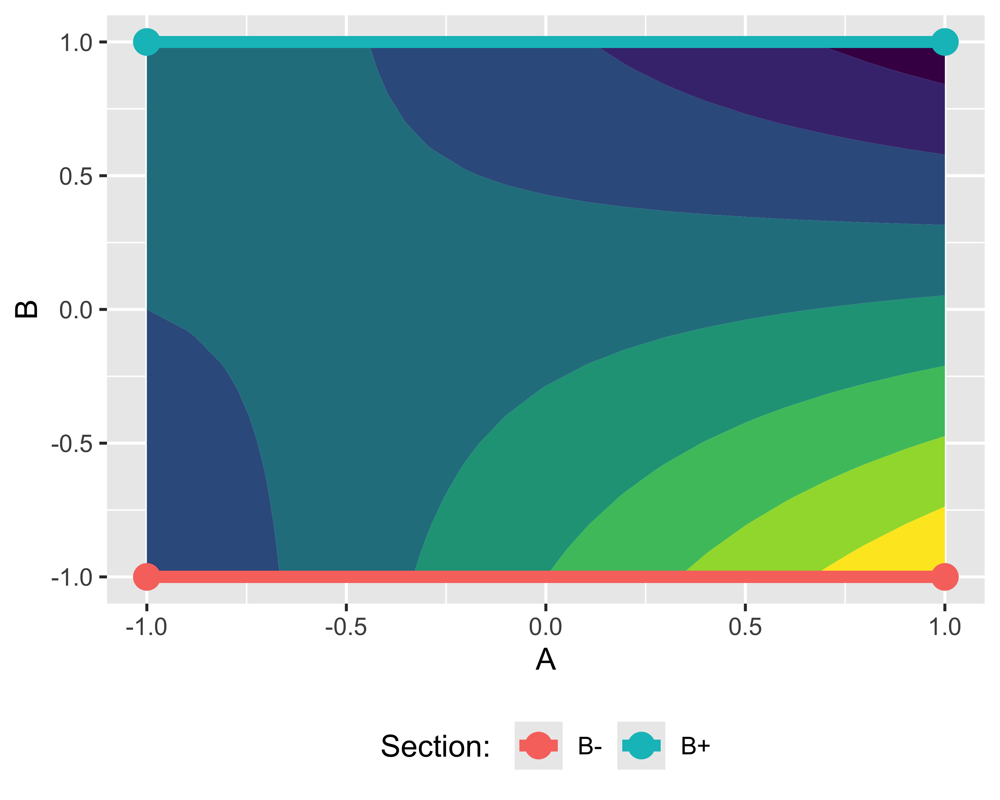

Design of Experiments
Design of Experiments and Statistical Analysis of Experimental Data, 2025

Paolo Bosetti
University of Trento, Department of Industrial Engineering
Design (and Analysis) of Experiments
\(\renewcommand{\hat}[1]{\widehat{#1}}\) \(\renewcommand{\tilde}[1]{\widetilde{#1}}\) \(\renewcommand{\theta}{\vartheta}\)
Industrial experiments often involve numerous factors corresponding to possibly very complex models
It is therefore necessary to minimize the number of treatments and, therefore, the cost of the experiment, and yet to obtain the same information
The experiments must then be analyzed with a statistical approach
Industrial experiment or scientific experiment?
A scientific experiment is generally conducted with the purpose of supporting or disproving a theory
- it is always based on a theoretical model to be verified
- often the model focuses on the effect of a limited number of explanatory variables
In the industrial field this is often not possible:
- often a theoretical model for subject of the experiment is not available due to scientific, technical, or practical reasons
- the interaction between multiple explanatory variables is often what matters most
For practical purposes, the design of the experiment is all the more important the higher the complexity (i.e. the number of factors involved)
Objectives of an experiment
In general, an experiment serves to:
- confirm a theoretical hypothesis (model): you want to verify the form \(y=f(\cdot)\) of the theoretical model; the regression of the model is accompanied by the study of confidence intervals (analytical or bootstrap)
- calibrate the parameters of a model: the shape is known and we want to obtain the parameter values; generally a regression is carried out, collecting data under realistic operating conditions
- identify the explanatory variables that influence a process: the model may be unknown and we want to determine the list of independent variables that appear in the \(y=f(\cdot)\); the objective is to build an approximate empirical model, which can possibly be used as a starting point for the formulation of a theoretical model
Dimensionality of an experiment
If the model of interest si simple (i.e. one predictor), the experiment consists of analyzing the response variable at a sequence of levels for the explanatory variable. The number of levels is correlated with the expected degree of the response: for a regression of degree \(m\) you need at least \(l=m+1\) levels
But if the model has multiple predictors, i.e. the output depends on \(n\) explanatory variables, and each variable is investigated on \(l\) levels, then the number of test conditions is \(l^n\)
If each test condition is then repeated \(r\) times (to average the results), the number of individual experiments is \(rl^n\)
This number can become large and economically unsustainable very quickly
Factorial plans
If in an experiment the only explanatory variable, or factor, takes on a sequence of values, in a multidimensional experiment the \(n\) factors take on an \(n\)-dimensional grid of values, called factorial plan
Factorial plan
- Two factors, \(A\) and \(B\)
- We investigate 2 levels for each factor indicated as \(X-\) and \(X+\)
- Let’s change one level at a time
- We evaluate each treatment only 1 time
- Let’s evaluate the effects of \(A\) and \(B\): \[ \begin{align} A &= 50 - 20 = 30\\ B &= 30 - 20 = 10 \end{align} \]
Yates notation
When the levels of all factors are only two, the Yates order can be used to indicate the combinations of levels:
- Factors and effects of factors are indicated with capital letters
- Treatments are indicated with combinations of lowercase letters
- letter present means factor at high level
- absent letter means factor at low level
- if all the letters are absent, write \((1)\)
Factorial plan
Changing one factor at a time does not identify the interactions
Interaction occurs when the effect of one factor depends on the level of another factor
In this second example we measure the response of treatments \((1), a, b, ab\)
We can estimate both the effects of \(A\) and \(B\) and the interaction \(AB\):
\[ \begin{align} A &= \frac{a+ab}{2} - \frac{(1) + b}{2} = 6\\ B &= \frac{b+ab}{2} - \frac{(1) + a}{2} = -14 \\ AB &= \frac{a+b}{2} - \frac{(1)+ab}{2} = -24 \end{align} \]
Interaction graph
The concept of interaction is well illustrated by interaction graphs
- If the two segments are parallel there is no interaction
- If the two segments are crossed or convergent there is interaction
- It is indifferent which factor is on the abscissa and which is on the series
Response surface
The interaction graphs are nothing more than projections on the axis of one of the two factors of the response surface
Coded units are generally used, rescaling the range of each factor to the range \([-1,1]\)
This way you have the same sensitivity regardless of the original scale range

NOTE: Neither the response surface nor the interaction plots give any information on the statistical significance of the effects
\(l^2\) factorial plans
In general, an experiment in which you have 2 factors each tested on \(l\) levels is a \(l^2\) factorial design, because the total number of treatments is \(N=rl^2\), where \(r\) is the number of repetitions for each treatment
The statistical model and regression model associated with the experiment are:
\[ y_{ijk} = \mu + \alpha_i + \beta_j + (\alpha\beta)_{ij} + \varepsilon_{ijk};\quad \hat y = \mu + \alpha x_1 + \beta x_2 + (\alpha\beta)x_1 x_2 \] with \(x_1\) and \(x_2\) the values of the two factors in coded units
As such, the experiment can be studied with a two-factor ANOVA (or two-way ANOVA):
\[ \textrm{A)}~\left\{ \begin{align} H_0&: \alpha_1 = \alpha_2 = \dots =\alpha_a = 0 \\ H_1&: \alpha_i \ne 0\quad\textrm{for at least one}~i \end{align} \right. \]
\[ \textrm{B)}~\left\{ \begin{align} H_0&: \beta_1 = \beta_2 = \dots =\beta_b = 0 \\ H_1&: \beta_j \ne 0\quad\textrm{for at least one}~j \end{align} \right. \]
\[ \textrm{AB)}~\left\{ \begin{align} H_0&: (\alpha\beta)_{ij} = 0\quad \forall~(i,j) \\ H_1&: (\alpha\beta)_{ij} \ne 0\quad \textrm{for at least one}~(i,j) \end{align} \right. \]
\(l^2\) factorial plans
These pairs of hypotheses correspond to a decomposition of the corrected total square sum \(SS_\mathrm{tot}=SS_A + SS_B + SS_{AB} + SS_E\)
The corresponding ANOVA table is:
| Effect | \(\nu\) (GdL) | \(SS\) | \(MS\) | \(F_0\) | p-value |
|---|---|---|---|---|---|
| A | \(a-1\) | \(SS_A\) | \(SS_A/\nu_A\) | \(MS_A/MS_E\) | \(\mathrm{CDF}^+(F_{0,A}, \nu_A, \nu_E)\) |
| B | \(b-1\) | \(SS_B\) | \(SS_B/\nu_B\) | \(MS_B/MS_E\) | \(\mathrm{CDF}^+(F_{0,B}, \nu_B, \nu_E)\) |
| AB | \((a-1)(b-1)\) | \(SS_{AB}\) | \(SS_{AB}/\nu_{AB}\) | \(MS_{AB}/MS_E\) | \(\mathrm{CDF}^+(F_{0,AB}, \nu_{AB}, \nu_E)\) |
| Error | \(ab(n-1)\) | \(SS_E\) | \(SS_E/\nu_E\) | — | — |
| Total | \(abn-1\) | \(SS_\mathrm{tot}\) | \(SS_\mathrm{tot}/\nu_\mathrm{tot}\) | — | — |
Example
We want to study the effect of cutting speed (factor \(A\)) and rake angle (factor \(B\)) of a turning tool on tool life. The two factors are both quantitative; we decide to investigate three levels for each factor, repeating each treatment twice: factorial plan \(2\cdot 3^2\)
- preparation of the test grid
- randomization of the operative sequence
- execution of experiments and data collection
- formulation and verification of the statistical model
- analysis of variance (ANOVA)
- creation of the response surface
Points 4 and 5 are possibly repeated
| StdOrder | Angle | A | Speed | B | Repeat | Life |
|---|---|---|---|---|---|---|
| 1 | 15 | -1 | 125 | -1 | 1 | NA |
| 2 | 20 | 0 | 125 | -1 | 1 | NA |
| 3 | 25 | 1 | 125 | -1 | 1 | NA |
| 4 | 15 | -1 | 150 | 0 | 1 | NA |
| 5 | 20 | 0 | 150 | 0 | 1 | NA |
| 6 | 25 | 1 | 150 | 0 | 1 | NA |
| 7 | 15 | -1 | 175 | 1 | 1 | NA |
| 8 | 20 | 0 | 175 | 1 | 1 | NA |
| 9 | 25 | 1 | 175 | 1 | 1 | NA |
Example — step 2.
In the grid, a new column of randomly ordered integers \(\left<1\dots N\right>,~N=rl^n\) is generated
The grid is rearranged according to the new column, usually called Run Order
| StdOrder | RunOrder | Angle | A | Speed | B | Repeat | Life |
|---|---|---|---|---|---|---|---|
| 4 | 1 | 15 | -1 | 150 | 0 | 1 | NA |
| 5 | 2 | 20 | 0 | 150 | 0 | 1 | NA |
| 10 | 3 | 15 | -1 | 125 | -1 | 2 | NA |
| 2 | 4 | 20 | 0 | 125 | -1 | 1 | NA |
| 12 | 5 | 25 | 1 | 125 | -1 | 2 | NA |
| 15 | 6 | 25 | 1 | 150 | 0 | 2 | NA |
| 3 | 7 | 25 | 1 | 125 | -1 | 1 | NA |
| 18 | 8 | 25 | 1 | 175 | 1 | 2 | NA |
| 17 | 9 | 20 | 0 | 175 | 1 | 2 | NA |
| 14 | 10 | 20 | 0 | 150 | 0 | 2 | NA |
| 8 | 11 | 20 | 0 | 175 | 1 | 1 | NA |
| 13 | 12 | 15 | -1 | 150 | 0 | 2 | NA |
| 6 | 13 | 25 | 1 | 150 | 0 | 1 | NA |
| 1 | 14 | 15 | -1 | 125 | -1 | 1 | NA |
| 11 | 15 | 20 | 0 | 125 | -1 | 2 | NA |
| 7 | 16 | 15 | -1 | 175 | 1 | 1 | NA |
| 16 | 17 | 15 | -1 | 175 | 1 | 2 | NA |
| 9 | 18 | 25 | 1 | 175 | 1 | 1 | NA |
Example — step 3.
The experiments are carried out according to the run order
By performing the experiments according to the run order possible unknown and uncontrolled effects are randomly distributed over all treatments:
- global variance increases (\(SS_\mathrm{tot}\))
- the relative effect of the factors is not altered (\(SS_X\))
Note: a repetition is a replica of the entire experiment, not of the measurement operation alone
| StdOrder | RunOrder | Angle | A | Speed | B | Repeat | Life |
|---|---|---|---|---|---|---|---|
| 4 | 1 | 15 | -1 | 150 | 0 | 1 | -3 |
| 5 | 2 | 20 | 0 | 150 | 0 | 1 | 1 |
| 10 | 3 | 15 | -1 | 125 | -1 | 2 | -1 |
| 2 | 4 | 20 | 0 | 125 | -1 | 1 | 0 |
| 12 | 5 | 25 | 1 | 125 | -1 | 2 | 0 |
| 15 | 6 | 25 | 1 | 150 | 0 | 2 | 6 |
| 3 | 7 | 25 | 1 | 125 | -1 | 1 | -1 |
| 18 | 8 | 25 | 1 | 175 | 1 | 2 | -1 |
| 17 | 9 | 20 | 0 | 175 | 1 | 2 | 6 |
| 14 | 10 | 20 | 0 | 150 | 0 | 2 | 3 |
| 8 | 11 | 20 | 0 | 175 | 1 | 1 | 4 |
| 13 | 12 | 15 | -1 | 150 | 0 | 2 | 0 |
| 6 | 13 | 25 | 1 | 150 | 0 | 1 | 5 |
| 1 | 14 | 15 | -1 | 125 | -1 | 1 | -2 |
| 11 | 15 | 20 | 0 | 125 | -1 | 2 | 2 |
| 7 | 16 | 15 | -1 | 175 | 1 | 1 | 2 |
| 16 | 17 | 15 | -1 | 175 | 1 | 2 | 3 |
| 9 | 18 | 25 | 1 | 175 | 1 | 1 | 0 |
Example — step 4.
We formulate the full quadratic regression model:
\[\begin{align} \hat y = & \mu + \alpha_1 x_1 + \beta_1 x_2 + (\alpha\beta)_1x_1x_2 + \\ & + \alpha_2x_1^2 + \beta_2x_2^2 + (\alpha\beta)_{2,1}x_1^2x_2 + \\ & + (\alpha\beta)_{1,2}x_1x_2^2 + (\alpha\beta)_{2,2}x_1^2x_2^2 \end{align}\]
where \((\alpha\beta)\) is not a product: it represents the coefficient of a product of factors \(A\) and \(B\)
It is necessary to evaluate normality and absence of pattern in the residuals

Example — step 5.
Choosing 5% as the threshold on the p-value, we observe that these effects are statistically insignificant:
- \(B^2\), corresponding to the \(\beta_2\) term in the regression
- \(A^2B\), corresponding to the \((\alpha\beta)_{2,1}\) term in the regression
| effect | \(\nu\) | \(SS\) | \(MS\) | \(F_0\) | \(p\mathrm{-value}\) |
|---|---|---|---|---|---|
| \(A\) | 1 | 8.333333 | 8.333333 | 5.769231 | 0.0397723 |
| \(B\) | 1 | 21.333333 | 21.333333 | 14.769231 | 0.0039479 |
| \(A^2\) | 1 | 16.000000 | 16.000000 | 11.076923 | 0.0088243 |
| \(B^2\) | 1 | 4.000000 | 4.000000 | 2.769231 | 0.1304507 |
| \(AB\) | 1 | 8.000000 | 8.000000 | 5.538462 | 0.0430650 |
| \(A^2B\) | 1 | 2.666667 | 2.666667 | 1.846154 | 0.2073056 |
| \(AB^2\) | 1 | 42.666667 | 42.666667 | 29.538462 | 0.0004137 |
| \(A^2B^2\) | 1 | 8.000000 | 8.000000 | 5.538462 | 0.0430650 |
| \(\varepsilon\) | 9 | 13.000000 | 1.444444 | NA | NA |
So the regression equation becomes: \[\begin{align} \hat y = & \mu + \alpha_1 x_1 + \beta_1 x_2 + (\alpha\beta)_1x_1x_2 + \\ & + \alpha_2x_1^2 + (\alpha\beta)_{1,2}x_1x_2^2 + \\ & + (\alpha\beta)_{2,2}x_1^2x_2^2 \end{align}\]
Example — step 6.
The response surface allows you to identify notable points and directions:
- Point S is a saddle point, where the gradient is zero in any direction: stable point
- At point P, the directions tangential to the isohypse are constant yield directions
- Point M is a maximum of yield
Model adequacy analysis
After possibly excluding some effects (for example \(B^2\) and \(A^2B\)) it is necessary to:
- reformulate the model
- analyze the residuals of the new model
- confirm with a new ANOVA
In particular, the analysis of the residuals is called model adequacy check (Model Adequacy Check, MAC) and typically consists of:
- checks for absence of patterns in the residuals depending on the factors
- checks for absence of patterns in the residuals depending on the test order
- verification of normality of residuals (Q-Q graph and Shapiro-Wilk test)
\(2^n\) factorial plan
Factor plans in which all factors have two levels (low and high, -1 and +1 in coded units) are of particular interest
- allow you to regress models only of the first degree
- require minimal testing
- they still allow to define the sensitivity of the process to the various factors, excluding non-significant factors
- are the starting point of any analysis of complex processes (i.e. with more than one explanatory variable)

\(2^n\) factorial plan
- Each factor has two levels: low and high. In coded units -1 and +1 are valid, referred to for short as - and +
- The treatments, i.e. combinations of levels for the \(n\) factors, are indicated with Yates notation
- the design matrix is obtained by permuting all the factors between - and + with frequencies gradually halved
- the project matrix is repeated for the \(r\) repetitions and also reports the random execution order column
- the effects matrix is obtained by adding the columns for the interactions, calculated as the product of the relative signs
| treatment | repetition | A | B | C | order |
|---|---|---|---|---|---|
| (1) | 1 | - | - | - | 1 |
| a | 1 | + | - | - | 7 |
| b | 1 | - | + | - | 5 |
| ab | 1 | + | + | - | 6 |
| c | 1 | - | - | + | 8 |
| ac | 1 | + | - | + | 4 |
| bc | 1 | - | + | + | 2 |
| abc | 1 | + | + | + | 3 |
| treatment | I | A | B | AB | C | AC | BC | ABC |
|---|---|---|---|---|---|---|---|---|
| (1) | + | - | - | + | - | + | + | - |
| a | + | + | - | - | - | - | + | + |
| b | + | - | + | - | - | + | - | + |
| ab | + | + | + | + | - | - | - | - |
| c | + | - | - | + | + | - | - | + |
| ac | + | + | - | - | + | + | - | - |
| bc | + | - | + | - | + | - | + | - |
| abc | + | + | + | + | + | + | + | + |
\(2^n\) factorial plan
The effects matrix contains the information to calculate the effects and the quadratic sums \(SS\) which, in turn, are used to complete the ANOVA table
For the effects: \[ \begin{align} A &= \frac{-(1)+a-b+ab}{2r} \\ B &= \frac{-(1)-a+b+ab}{2r} \\ AB &= \frac{+(1)-a-b+ab}{2r} \end{align} \]
For quadratic sums: \[ \begin{align} SS_A &=& \frac{(-(1)+a-b+ab)^2}{4r} \\ SS_B &=& \frac{(-(1)-a+b+ab)^2}{4r} \\ SS_{AB} &=& \frac{(+(1)-a-b+ab)^2}{4r} \end{align} \]
In general: \(\mathrm{E}(X) = \frac{2}{2^rn}\mathrm{Contrast}(X)\) and \(\mathit{SS}(X) = \frac{1}{2 ^rn}\mathrm{Contrast}(X)^2\) where the contrast of the factor \(\mathrm{Contrast}(X)\) is calculated using the signs of the relevant column \(X\) for the treatments in the order of Yates (e.g. \(\mathrm{Contrast}(AB)=+(1)-a-b+ab\))
\(2^n\) factorial plan: statistical model
The statistical model of a \(2^n\) factorial plan is obviously a first-order linear model in all factors. For \(n=2\), for example:
\[ y_{ijk} = \mu + \alpha_{i} + \beta_{j} + (\alpha\beta)_{ij}+\varepsilon_{ijk} \] For \(n=3\): \[ y_{ijkl} = \mu + \alpha_{i} + \beta_{j} + (\alpha\beta)_{ij}+ \gamma_k + (\alpha\gamma)_{ik} + (\beta\gamma )_{jk} + (\alpha\beta\gamma)_{ijk} + \varepsilon_{ijkl} \] and so on.
In R we will see that these models can be abbreviated as Y~A*B and Y~A*B*C respectively and used to calculate the ANOVA table
Unreplicated factorial designs
As the number of factors increases, the number of individual tests may become unsustainable
The simplest way to reduce the number of tests is to avoid repetitions for various treatments
If a treatment is not repeated, however, it is not possible to calculate the \(SS_E\) and therefore the ANOVA table cannot be completed with the \(F_0\) and the p-values
The solution was proposed by C. Daniel and is based on the hypothesis that at least one of the factors or interactions is not significant
This assumption is usually reasonable for more complex processes with large \(n\), precisely the cases where it is particularly important to reduce the number of tests
The idea is that non-significant effects are statistics calculated on different sub-samples of the same homogeneous sample, and therefore are normally distributed. Only the significant effects deviate from the normal distribution of the others
Daniel’s method
Which effects are probably significant can therefore be determined with a quantile-quantile graph of them
The graph is a first screening which must be conservative: it only serves to remove effects that are certainly not significant (i.e. very aligned with the diagonal) and allow the execution of the ANOVA
The ANOVA table must however be calculated on a reduced linear statistical model, in order to confirm the result of the graphic method or to remove further effects that are actually non-significant
Daniel’s method
In this case only the effects \(A, C, D\) and the interactions \(AC\) and \(AD\) are non-normal
The linear statistical model can then be reviewed as
\[ \begin{align} y_{ijkl} =& \mu + \alpha_{i} + \gamma_{j} + (\alpha\gamma)_{ij}+ \\ &+\delta_k + (\alpha\delta)_{ik} + \varepsilon_{ijkl} \end{align} \] That is, we can already rule out that \(B\) is in fact a factor. In this way, instead of an unreplicated \(2^4\) factorial plan we are dealing with a twice replicated \(2^3\) (i.e. \(2\cdot 2^3\)), for which we can perform a normal ANOVA analysis
Transformations
In general, if the residuals of a linear model are non-normal, then p-values cannot be calculated from \(F_0\)
Often, however, it is possible to transform the response to make the residuals normal
The transformation can be any analytic function applied to the response
Example
Let’s consider the data represented in this graph
It doesn’t matter where the data comes from: let’s just build a linear model of the data
\[ y_{ij} = \mu + x_i + \varepsilon_{ij}\]
Notice how the residuals do not look normal and that there are some obvious patterns

Example
If we observe from the boxplot that the yield tends to increase more than linearly with \(x\), we can think of reformulating the model by transforming it through a squaring:
\[ y_{ij} = (\mu + x_i + \varepsilon_{ij})^2\] The model no longer seems linear, but considering it can be rewritten as
\[ \sqrt{y_{ij}} = \mu + x_i + \varepsilon_{ij}\]
it is clear that it is still a linear model in the coefficients.
Box-Cox transformations
Box and Cox proposed a method to identify the best transformation in the family of power transformations \(y^* = y^\lambda\), with \(y^*=\ln(y)\) when \(\lambda=0\)
We calculate a graph of the logarithmic likelihood \(\mathcal{L}\) (log-likelyhood) of the following \(y^{(\lambda)}\):
\[ y_i^{(\lambda)} = \begin{cases} \frac{y_i^\lambda-1}{\lambda\dot y^{\lambda-1}} & \lambda\neq 0 \\ \dot y \ln y_i & \lambda = 0 \end{cases}, ~~~ \dot y = \exp\left[(1/n)\sum \ln y_i\right],~i=1, 2,\dots,n \] The likelihood \(\ln\mathcal{L}(\lambda|y)\) is nothing more than the probability of extracting a sample \(y\) given a certain parameter \(\lambda\). Its maximum coincides with the value of \(\lambda\) which makes the sample \(y\) more normal.
Box-Cox diagram
The Box-Cox diagram also identifies an interval corresponding to a variation of less than 95%.
Any value of \(\lambda\) within this range is statistically equivalent
You then choose the value included in the range, which represents a “convenient” transformation
For example, if the optimal \(\lambda\) was 0.58, we would still choose \(\lambda=0.5\), which corresponds to the transformation \(y^*=\sqrt{y}\)
Extensions and fractions of FPs
An \(n^2\) factorial plan assumes that the response is linear: this hypothesis must be verified by extending the plan to more than 2 levels
A factorial plan, even an unreplicated \(2^n\), can still be too onerous: in these cases it is possible to split it, i.e. divide the number of treatments by powers of 2, under penalty of losing information on the more complex interactions
Central Composite Design (CCD)
It would be automatic to extend a FP from \(2^2\) to \(2^3\) to evaluate quadratic effects
In this way, however, the sensitivity in the axial directions would be lower than the sensitivity in the diagonal directions, the evaluation interval being smaller in the first case
It is therefore preferable to perform centered FPs with rotational symmetry around the origin
By two factors, the axial points are extended a distance \(\sqrt{2}\) from the origin; in the generic \(n\)-dimensional case the distance is \((2^k)^{1/4}\)


Fractional Factor Plans (FFP)
Suppose we consider only the opposite vertices of the FP in the figure: \((1), ab, ac, bc\)
We are considering half of the original FP, which however includes all levels of the three factors
Splitting certainly reduces the completeness of the model, but it saves a lot of testing
- How to choose fractions for larger dimensions?
- What information do we lose?
Choosing fractions: defining relationships
Looking at the effects matrix, we observe that the treatments \((1), ab, ac, bc\) correspond to the rows for which the relation \(I=-ABC\) holds. The other complementary half instead corresponds to \(I=ABC\)
These relations are called defining relationships because they define the FFP. It makes no difference whether you choose the positive or the negative half
| treatment | I | A | B | AB | C | AC | BC | ABC |
|---|---|---|---|---|---|---|---|---|
| (1) | + | - | - | + | - | + | + | - |
| a | + | + | - | - | - | - | + | + |
| b | + | - | + | - | - | + | - | + |
| ab | + | + | + | + | - | - | - | - |
| c | + | - | - | + | + | - | - | + |
| ac | + | + | - | - | + | + | - | - |
| bc | + | - | + | - | + | - | + | - |
| abc | + | + | + | + | + | + | + | + |
Alias and information loss
In a fractional FP \(2^{3-1}\) with defining relationship \(I=ABC\), we consider these effects: \[ \begin{align} A &= (-(1)+a-b+ab-c+ac-bc+abc)/(2r) \\ BC &= (\underline{+(1)}+a-b\underline{-ab}-c\underline{-ac} \underline{+bc}+abc)/(2r) \end{align} \] Since the underlined treatments are not tested, the \(A\) effect is indistinguishable from the \(BC\) effect
It is said that \(A\) is aliased with \(BC\)
Given a certain defining relation, the possible alias structures can be obtained from the relation itself using a dedicated algebra: \(I\cdot X=X\), \(X\cdot X = X\), \(X\cdot Y =XY\)
Therefore, it results in \(A\cdot I=A\cdot ABC\) i.e. \(A=BC\), and similarly \(B=AC\) and \(C=AB\)
Alias and information loss
Therefore, by splitting a FP you lose information: you lose the ability to discriminate between aliased effects. It is clear that the longer the defining relationship, the higher the degree of alias interactions with the direct effects will be (e.g. \(A=BCDEF\))
By virtue of the principle of sparsity of effects, however, this loss of information is not dramatic. The principle says that in a process the significance of high-level interactions is gradually less likely as the number of factors that compose them increases
Consequently, an alias \(A=BCDEF\) can be neglected by assuming the significance of \(A\) rather than that of \(BCDEF\) by virtue of said Principle
Fractional FP of type \(2^{n-p}\)
It is possible to split a plan more than once, reducing the number of treatments to \(2^{n-p}\)
For each fraction it is necessary to choose a new defining relationship
For example, for \(2^{7-2}\) you can choose the DRs \(I=ABCDE\) and \(I=CDEFG\)
For these two DRs there is a third, dependent one: \(I=ABFG\). Any two of these three DRs are equivalent
Minimum aberration design
- All possible \(p\)-tuples of defining relations are generated, completing them with the dependent one
- Count the number of letters in the \((p+1)\)-tuples (previous example: \(\left<5,5,4\right>\))
- the design that minimizes the number of strings with minimum length is preferable because it has fewer aliases
Minimum Aberration Design (example)
Compare these \(2^{7-2}_{IV}\) designs:
- Design A
-
\(I = ABCF = BCDG~(= ADFG)\);
- Design B
-
\(I = ABCF = ADEG~(= BCDEFG)\);
- Design C
-
\(I=ABCDF=ABDEG~(=CEFG)\)
Carefully select the defining relations!
| Design A | Design B | Design C |
|---|---|---|
| \(AB=CF\) | \(AB=CF\) | \(CE=FG\) |
| \(AC=BF\) | \(AC=BF\) | \(CF=EG\) |
| \(AD=FG\) | \(AD=EG\) | \(CG=EF\) |
| \(AG=DF\) | \(AE=DG\) | |
| \(BD=CG\) | \(AF=BC\) | |
| \(BG=CD\) | \(AG=DE\) | |
| \(AF=BC=DG\) |
Final recommendations
It is very common to see DoE only partially applied…
To make a good FP
- Start with \(2^n\) and then increase it
- Evaluate the opportunity for splitting and carefully choose the defining relationships
- always perform the model fit check and refine the statistical model accordingly
- Discuss interactions and effects only after refining the model
- Evaluate the effects of alias
Advanced themes
- Blocking
- Minimum Aberration Design
- Model transformations and Box-Cox transformations
paolo.bosetti@unitn.it — https://paolobosetti.quarto.pub/DESANED